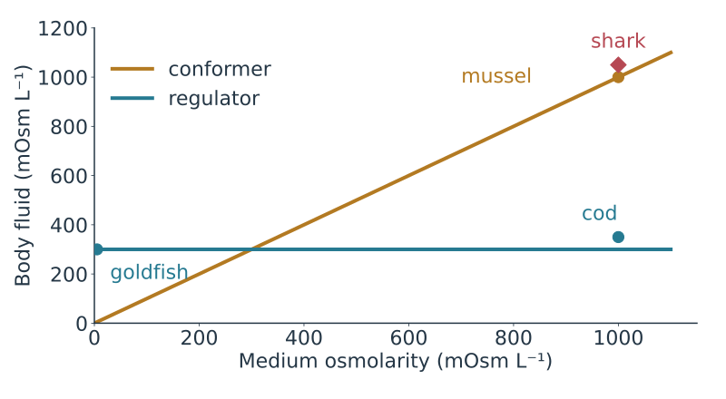
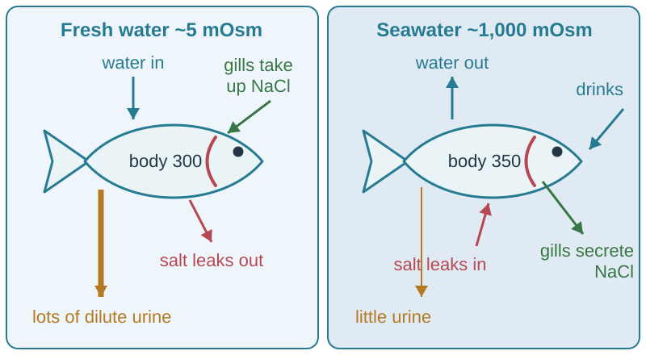
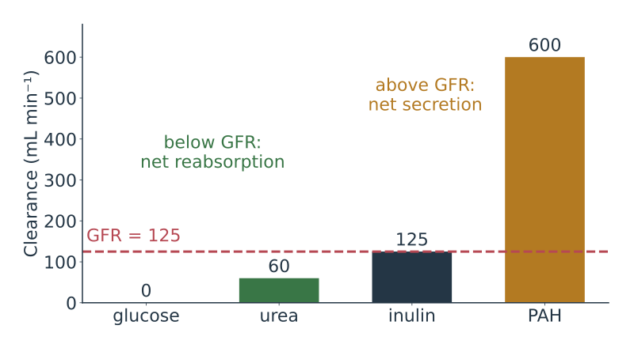
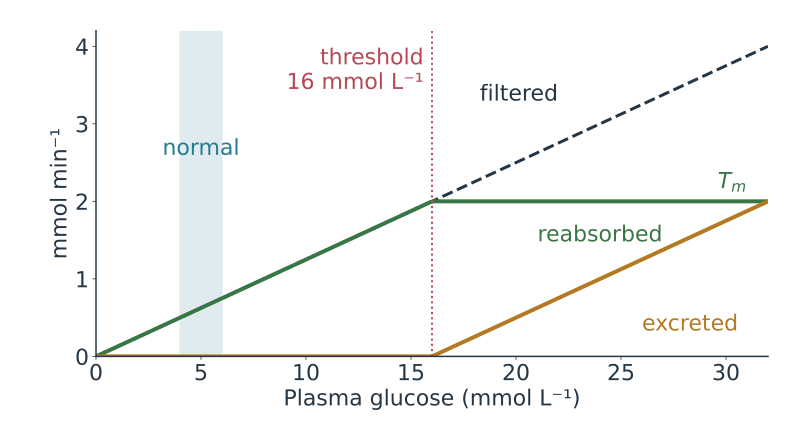
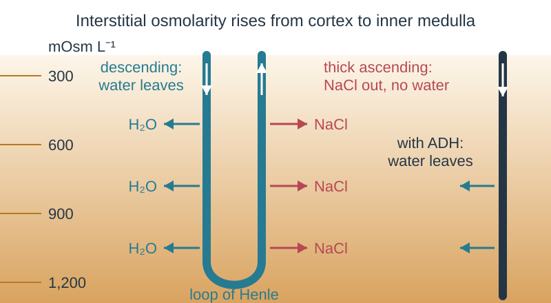
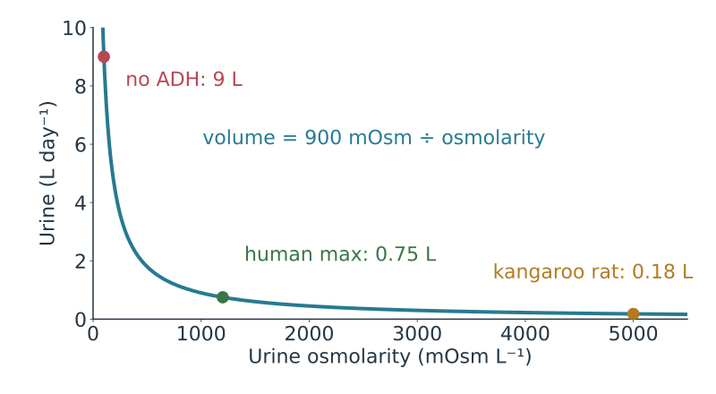

In A3, blood carried O₂ from the gills or lungs to every cell. But the same blood must also keep its water and ion content stable, and the thin, enlarged surfaces that exchange gases also let water and ions through. A goldfish lives in almost pure water, a cod in water three times saltier than its blood, and a kangaroo rat in a desert where it never drinks. All three keep their plasma near 300 mOsm L⁻¹. How?
The physics: osmolarity, osmotic water movement and tonicity.
Life in water: conformers and regulators; freshwater and marine fish; sharks.
The tool: the transporting epithelial cell.
The mammalian kidney: filtration, reabsorption and secretion; what each nephron segment does; clearance.
Saving water: the medullary gradient and ADH.
Getting rid of nitrogen: ammonia, urea and uric acid; the insect solution.
The problem: three animals, one target
mOsm L⁻¹
Goldfish
Cod
Kangaroo rat
Surroundings
~5 (fresh water)
~1,000 (sea)
desert air, food
Plasma
~300
~350
~300
Water threat
floods in at gills
leaks out at gills
evaporation
Salt threat
leaks out
leaks in
salt, urea from food
Gills are built for O₂ (A3): large and thin, so equally leaky to water and ions.
Each animal must balance input = output for water and for each ion.
Osmoconformers: body fluids follow the medium. Mussels, sea stars and many crabs are ~1,000 mOsm L⁻¹ in seawater. They may still regulate single ions (crabs keep Mg²⁺ low).
Osmoregulators hold their own osmolarity: bony fishes, freshwater invertebrates, all land animals.
Stenohaline: narrow salinity range (goldfish). Euryhaline: wide range (salmon, eels).

Bony fishes are regulators. So what must a freshwater and a marine teleost do?
Freshwater and marine teleosts: opposite problems
Fresh water: fish hyperosmotic to the medium. Gains water, loses salt; drinks little; much dilute urine; gill cells take up NaCl; ions also from food.
Seawater: fish hyposmotic. Loses water, gains salt; drinks seawater; little urine, about isosmotic; gill cells secrete NaCl; kidney removes Mg²⁺ and SO₄²⁻.
Same organs, direction of transport reversed. The gill cells that move ions are ionocytes.

Marine sharks live in the same sea as the cod, but solve it differently.
Sharks: becoming slightly saltier than the sea
Plasma NaCl stays low, but sharks and rays retain urea (~350 mmol L⁻¹) and TMAO.
Total ~1,050 vs sea ~1,000 mOsm L⁻¹: water moves slightly in, so sharks do not drink.
Gills are almost impermeable to urea; TMAO counteracts urea’s effect on proteins.
NaCl that leaks in is secreted by the rectal gland (~2× plasma NaCl).
Worked example: GFR = 0.12 L min⁻¹, plasma concentration P = 4 mmol L⁻¹, reabsorption 0.40 mmol min⁻¹, secretion 0.04 mmol min⁻¹, urine flow 0.001 L min⁻¹.
Filtered load = 0.12 × 4 = 0.48 mmol min⁻¹
Excretion = 0.48 − 0.40 + 0.04 = 0.12 mmol min⁻¹
Urine concentration = 0.12 ÷ 0.001 = 120 mmol L⁻¹
Halving urine flow doubles the concentration but not the amount excreted.
Which parts of the tubule do the reabsorbing?
What each nephron segment does
Segment
Main transport
Water permeability
Fluid leaving (mOsm L⁻¹)
Proximal convoluted tubule
~2/3 of filtered Na⁺ and water; nearly all glucose and amino acids; secretes organic acids (PAH)
High
~300
Descending limb
Little NaCl transport
High: water leaves into the hyperosmotic medulla
up to ~1,200
Thick ascending limb
NaCl reabsorbed by the Na⁺–K⁺–2Cl⁻ cotransporter
None: fluid becomes dilute
~100
Distal convoluted tubule
Fine-tunes NaCl and Ca²⁺ reabsorption
Low
~100
Collecting duct
Na⁺ reabsorption regulated by aldosterone; water regulated by ADH
Low, or high with ADH
50–1,200
About 25 % of filtered Na⁺ is taken up in the loop, ~5 % in the distal tubule and ~2–5 % in the collecting duct.
The bulk is recovered early and unregulated; the final adjustment is late and hormonally controlled.
How can we measure from outside what the tubule does to a substance?
Clearance: what the tubule does, measured from outside
Clearance = volume of plasma completely cleared of a substance per minute: C = \frac{U \times V}{P} (U urine concentration, V urine flow, P plasma concentration)
Inulin is filtered only, so C_\text{inulin} = GFR: 30 mg mL⁻¹ × 2 mL min⁻¹ ÷ 0.5 mg mL⁻¹ = 120 mL min⁻¹.
C < GFR: net reabsorption.
C > GFR: net secretion.

Why is the glucose clearance zero, and when does it stop being zero?
The transport maximum: glucose in diabetes
Na⁺–glucose cotransporters saturate at T_m ≈ 2.0 mmol min⁻¹.
Glucose in urine (glycosuria) takes water with it: the large urine volume and thirst of untreated diabetes mellitus.

The kidney recovers solutes. How does it recover water and make urine more concentrated than plasma?
Try it: glucose in the kidney
Building the medullary gradient
The thick ascending limb pumps NaCl into the medulla but lets no water follow.
The descending limb is water-permeable: water leaves, and the fluid inside concentrates to match.
Opposite flow in the two limbs (countercurrent multiplication) stacks small steps into 300 → ~1,200 mOsm L⁻¹. Recycled urea adds to the inner medulla.
Longer loops, larger gradient. Max urine: beaver ~500, human ~1,200, kangaroo rat ~5,000 mOsm L⁻¹.

The gradient is there. What decides whether the collecting duct uses it?
ADH: a feedback loop that opens the water valve
Sensor: osmoreceptors in the hypothalamus detect a 1–2 % rise in plasma osmolarity.
Messenger:ADH (antidiuretic hormone, vasopressin), made in the hypothalamus, released from the posterior pituitary.
Effector: ADH binds V2 receptors on collecting-duct cells; cAMP causes aquaporin-2 to be inserted in the apical membrane.
Water leaves the duct into the hyperosmotic medulla.
Thirst is triggered in parallel.
flowchart TB
A["Dehydration:<br/>plasma osmolarity rises"] --> B["Hypothalamic<br/>osmoreceptors"]
B --> C["ADH released from<br/>posterior pituitary"]
C --> D["Aquaporin-2 inserted<br/>in collecting duct"]
D --> E["Water reabsorbed;<br/>small volume of concentrated urine"]
E -->|"plasma osmolarity falls:<br/>less ADH (negative feedback)"| A
How much difference does ADH make to urine volume?
What ADH is worth: the minimum urine volume
Urine volume = solute to excrete ÷ urine osmolarity
A person must excrete 900 mOsm of solute a day:
maximum ADH, 1,200 mOsm L⁻¹: 0.75 L day⁻¹;
no ADH, 100 mOsm L⁻¹: 9 L day⁻¹;
at the kangaroo rat’s 5,000 mOsm L⁻¹: 0.18 L day⁻¹.
Diabetes insipidus: ADH missing (central) or ignored by the kidney (nephrogenic): a large volume of dilute urine and great thirst.

Much of that solute load is nitrogen from protein. In which form should it leave?
Nitrogenous waste: a water–energy trade-off
Ammonia (NH₃)
Urea
Uric acid
Toxicity
High
Low
Very low
Solubility in water
High
High
Very low
Water needed per g N
~300–500 mL
~50 mL
~10 mL (excreted as a paste)
Energy cost of synthesis
None
Moderate (urea cycle, liver)
High
Animals
Ammonotelic: teleosts, tadpoles, most aquatic invertebrates
Ureotelic: mammals, adult amphibians, sharks
Uricotelic: birds, most reptiles, insects
Ammonia is cheap but toxic; it can only be used where water flushes it away, usually by diffusion across the gills.
A frog switches from ammonia to urea at metamorphosis, when it leaves the water.
Uric acid saves the most water but costs the most energy.
Why do all animals that develop in a shelled egg make uric acid?
Uric acid: the egg and the bird
The shelled (cleidoic) egg is closed: wastes stay inside until hatching.
Urea would stay dissolved and reach toxic levels.
Uric acid precipitates: neither toxic nor osmotically active.
The adult bird keeps the same waste:
Uric acid leaves as a white paste of urates, mixed with faeces in the cloaca: little water is lost with it.
Light and water-saving: useful for flight and for dry habitats.
Next (A5 — Integration, movement and reproduction): ADH was released because the hypothalamus sensed a change. Who are the sensors, controllers and messengers of the body, and how do nerves, muscles and hormones carry out a response?